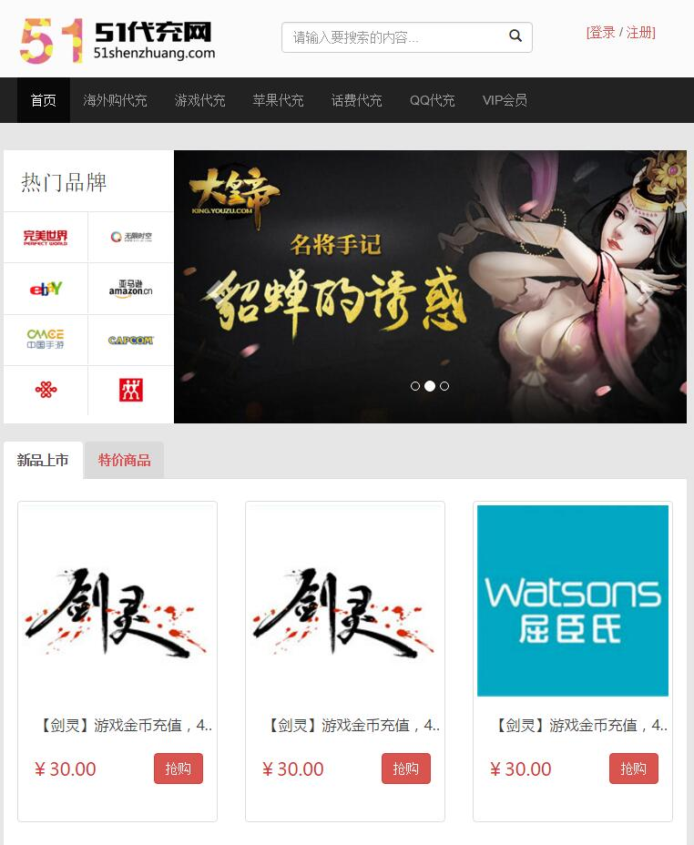
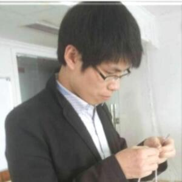
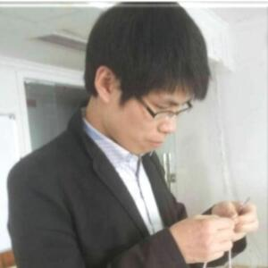

工作总结
by 张大漾

美白走项目（APP项目）
- 项目psd稿件切图
- 前端页面开发
- 游戏邀请、下载、炫耀等H5界面开发
- 贺卡模板页、贺卡选择页、贺卡编辑页、贺卡预览页
- 福袋页、购买记录、关于我们、我的助走团、我的资金
- 尝试开发Hybird APP。首页、闪屏页、动画、参数、刷新、Webview
- 优化HTML5界面字体大小、颜色、图片位置、按钮样式
- 重构精简代码、可读性更强
- 解决禅道上的一些bug
项目总结
- 必须拆分H5界面CSS、JS、HTML代码，精简代码
- 使用阿里字体图标，3W+，减少图片能非常有效提高访问速度
- 手动压缩图片、修改文件的路径，前端需要自动化
- 基于页面开发，代码重复率高、复用性不强
- 重复造轮子，虽然能深入研究，但是全部代码都自己写，影响开发效率
重要紧急的需求
主要配合包包、河神、亚军做一些事情

51代充项目（WEB项目）
- 理解需求、参与设计师的早期设计
- 前端页面开发
- 首页、登录注册、支付页面、个人中心、商品筛选等界面
- 搜索栏、登录注册、导航栏开发、about、certified
- 账单列表、充值中心、提现中心以及弹层效果
- 海外代购、游戏代充、苹果代充、话费代充、QQ代充、VIP代充
- 实现点击滚动到顶部功能、界面切换特效
- 考虑移动优先、响应式布局设计；兼容IE7+、firefox、chrome、opera、safari等主流浏览器
- 选定Bootstrap、Jquery为设计framework，使用阿里OSS工具
- 解决禅道上的一些bug：字体跨域请求问题，优化网站样式
项目总结
- 前后端不分离，存在沟通成本、bug隐患、开发效率
- 手动压缩图片、修改文件的路径，前端需要自动化
- 基于页面开发，代码重复率高、复用性不强
- 学习能力瓶颈，需要学习更强大的技术

SDK商户后台（最精致的产品）
- 青木丨清晰的产品文档、严谨的逻辑结构
- 上元丨扁平化风格、优雅的配色方案、大量的微交互设计
- 部署丨使用Node.js
- 解决前端工程中性能优化,格式化、压缩文件
- 资源加载（异步、同步、按需、预加载、依赖管理、合并、内嵌）
- 模块化开发、自动化工具、开发规范、代码部署

前端工程
前端工程其实是一个很大的话题，开发仅是其中的一部分。
如何选型技术、如何定制规范、如何分治系统、如何优化性能、如何加载资源，当你从切图开始转变为思考这些问题的时候，

磕首问路，码梦为生
以后我会为我们的团队带来更多优质的作品
为公司发展贡献自己的一份力
感谢各位朋友同事给予我的帮助、配合与指导
亚军、河神、炎军、上元、青木、梅子、青阳、发哥等等
 
